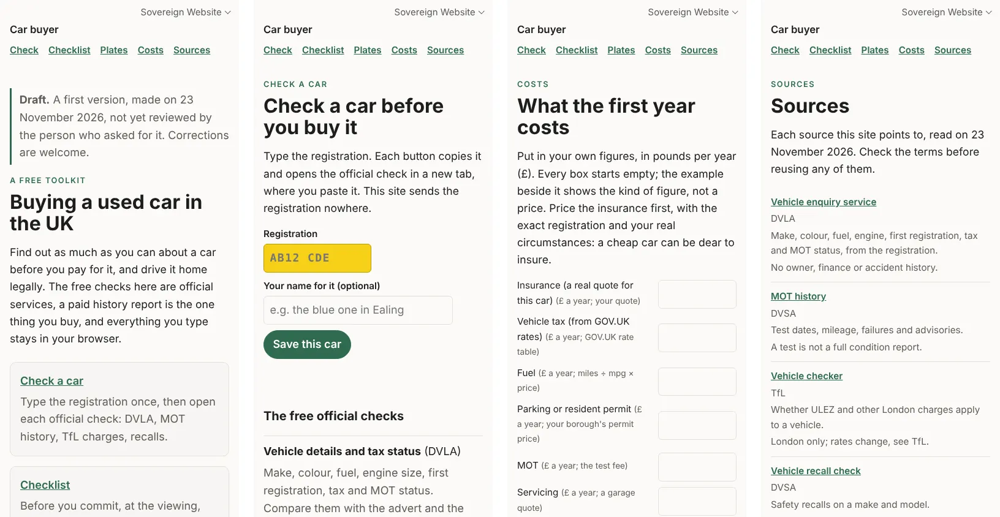

Synthetic users: Car Buyer, round 2
Site: https://car-buyer.tool.sovereignweb.site/ at 06a6b42 (v0.1.2). Run: 23 November 2026, about 16:40 UTC, by design.b.rounds. Would you use this before buying a car? 3 of 5 (round 1: 4 of 5). Look 3.6 (4, 4, 4, 3, 3). Nobody said "wow". The review.
The same method and personas as round 1. These are simulations, and never replace the measured checks or a real person. With five personas, one vote is the difference between 4 and 3; read the reasons, not only the count.
| Persona | Use it? | Look | Most useful | Least useful | In their words |
|---|---|---|---|---|---|
| First-time buyer | yes | 4 | Check | Sources | "it keeps saying a paid history report is 'the one thing you buy' and never says roughly what one costs or how to pick one." |
| Parent | yes | 4 | Checklist | Plates | "the ticks are 'in this browser only', so his phone and mine won't match unless we pass a file back and forth." |
| Londoner | yes | 4 | Costs | Plates | "The cost sheet lets me put ULEZ days at £12.50 and Congestion Charge days at £18 next to my parking permit, which shows the real yearly cost." |
| Low-vision reader | no (yes in round 1) | 3 | Checklist | Plates | "the bits I need are in small grey type: the hints next to each cost box ... The registration box already shows 'AB12 CDE' in grey on yellow, and at first I thought a car had been filled in for me." |
| Sceptic who knows the trade | no | 3 | Plates | Costs | "a set of links to GOV.UK pages I already know ... nothing on what the car is worth, how to haggle or how to read a dodgy advert." |
What changed
- Better: the Londoner now names Costs the most useful page. The London rows are in days at the stated daily rates. All five call the writing plain and honest about limits. Four call the checklist practical, and the tick boxes are now "big".
- Worse for the low-vision reader: the new cost hints are small and grey, and the grey "AB12 CDE" on the yellow box reads as a car already entered.
- Still open: what a history report costs (only where a source says it), the MIB button offered to buyers who usually cannot use it, and the age identifier on Plates.
